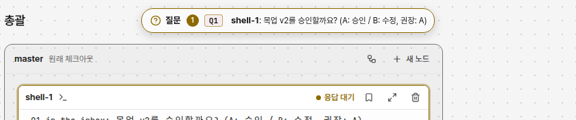
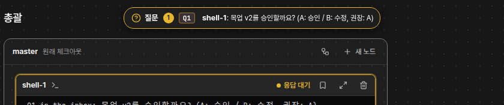

완료1shell-1: 목업 두 판을 만들고 시험을 모두 통과했다.
문서 ID: M37응답할 곳: 총괄 · loom 총괄연 담당: 코디 · 완료알림v2 · 2026-10-22
완료 알림: 맡긴 일이 끝나면 받은편지함에 알린다
사람 지시: 「사람이 에이전트에게 맡긴 일이 끝나면 끝났다고 질문처럼 알림이 오는 기능이 있으면 좋겠음」. 사람이 터미널에 입력했거나 받은편지함에서 답한 일이 끝나면 질문과 같은 알약·목록에 「완료」가 뜬다. 에이전트끼리 주고받은 일에는 뜨지 않는다. 점선이 바뀌는 곳이다.
① 지금 시험 데몬 캡처 · 질문 하나


② 알약 설정 「질문 알약」 기본값 「한 줄」
ⓐ 완료 하나
ⓑ 다크 · ⓐ와 같다
완료1shell-1: 목업 두 판을 만들고 시험을 모두 통과했다.
ⓒ 질문 하나와 완료 둘. 질문을 먼저 보인다
질문3Q12총괄: 목업 v2를 승인할까요? (A: 승인 / B: 수정, 권장: A)
ⓓ 다크 · ⓒ와 같다
질문3Q12총괄: 목업 v2를 승인할까요? (A: 승인 / B: 수정, 권장: A)
- 완료만 있으면 알약은 초록 테두리, 원 안 체크, 「완료」, 수 배지,
노드 이름: 마지막 답의 첫 줄이다. 초록은 노드 상태 「완료」 점과 같은 색이다. - 질문이 하나라도 있으면 알약은 지금처럼 질문을 보인다. 수 배지는 완료를 포함한 모든 수다. 완료가 질문을 가리지 않는다.
- 알약을 누르면 지금처럼 목록을 편다. 「바로 답하기」 꼴에서는 완료 줄에 답 칸이 없고 글만 보인다.
③ 펼친 목록 질문 줄은 지금과 같다
라이트
질문 3
Q12질문
목업 v2를 승인할까요? (A: 승인 / B: 수정, 권장: A)
A승인권장B수정
완료
지시: 완료 알림 목업을 만들고 시험해 줘
목업 두 판을 만들고 시험을 모두 통과했다.
완료
지시: 설정 화면 버튼 겹침 고쳐
설정 화면의 겹친 버튼을 고쳤다.
다크
질문 3
Q12질문
목업 v2를 승인할까요? (A: 승인 / B: 수정, 권장: A)
A승인권장B수정
완료
지시: 완료 알림 목업을 만들고 시험해 줘
목업 두 판을 만들고 시험을 모두 통과했다.
완료
지시: 설정 화면 버튼 겹침 고쳐
설정 화면의 겹친 버튼을 고쳤다.
- 완료 줄은 번호 칩 대신 초록 체크와 「완료」를 보인다. 그 아래에 일을 맡긴 사람의 지시(「지시: …」, 첫 줄)와 결과(에이전트 마지막 답의 첫 줄)를 보인다. 둘 다 200자까지다(2026-10-22 사람 지시 Q289 「알림에 사람의 지시도 보인다」).
- 줄을 누르면 질문 줄처럼 그 노드로 가서 터미널에 입력 초점을 준다. [×]는 그 알림을 지운다.
- 알림은 이때 사라진다: [×]를 누른다, 그 노드 터미널에 입력한다, 프로세스가 끝난다. 에이전트끼리의 메시지로 노드가 다시 일해도 남는다(사람이 보기 전에 사라지지 않게).
- 완료만 있는 노드의 카드는 주황 테두리와 「응답 대기」를 보이지 않는다. 사이드바 점도 지금 상태 그대로다. 질문 탭 배지와 시스템 알림(켰을 때)은 완료도 센다.
승인한 것 v1 권장안 승인, v2에 지시 줄을 더했다
| 정할 것 | 권장 | 다른 안 |
|---|---|---|
| 자리 | 질문과 같은 알약·목록(받은편지함 하나) | 질문 알약 옆에 초록 「완료 N」 알약을 따로 둔다 |
| 알약에 보일 것 | 질문을 먼저, 질문이 없을 때만 완료 | 오래된 차례대로(완료가 질문을 가릴 수 있다) |
| 알림이 사라지는 때 | [×], 그 터미널 입력, 프로세스 끝 | 노드가 다시 일을 시작하면(에이전트 메시지 포함) 사라진다 |
| 뜨는 노드 | 사람이 일을 맡긴 모든 노드(자식 노드 포함) | 사람이 띄운 노드(부모 없음)만 |